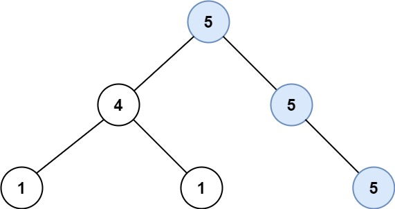

687. 最长同值路径
| 题目信息 | 内容 |
|---|---|
| 难度 | 中等 |
| 核心模式 | 树形 DP：后序递归，返回单边向下最长同值边数，全局答案取左右之和 |
| 时间复杂度 | O(n) |
| 空间复杂度 | O(h) |
题目与约束
给定一个二叉树的 root ，返回 最长的路径的长度 ，这个路径中的 每个节点具有相同值 。 这条路径可以经过也可以不经过根节点。
两个节点之间的路径长度 由它们之间的边数表示。
示例 1:

<strong>输入：</strong>root = [5,4,5,1,1,5]
<strong>输出：</strong>2
示例 2:

<strong>输入：</strong>root = [1,4,5,4,4,5]
<strong>输出：</strong>2
提示:
-
树的节点数的范围是
[0, 104] -
-1000 <= Node.val <= 1000 -
树的深度将不超过
1000
核心不变量
对每个节点，定义
dfs(node)为“从该节点向下延伸、且节点值都相等的单边路径的最大边数”；经过该节点的最长同值路径边数为左向边数 + 右向边数，用它更新全局答案，而递归向上只能返回左右两条中的较大者。
完整推导
思路推导
- 直觉与痛点（路径可以拐弯）
一条同值路径可能“从左子树穿过当前节点再到右子树”，也可能是“一直向下”。若只看单边，会漏掉“拐弯”的更长路径；若每次都把左右都算进来往上返回，又会得到无法再延长的非法路径。
- 破局思路（返回值与答案分开）
让 dfs(node) 返回单边的向下同值边数：
- 若
node.left存在且值等于node.val，则leftLen = dfs(node.left) + 1，否则leftLen = 0； - 右孩子同理得
rightLen。
这里 +1 表示“当前节点到该孩子的那条边”。注意 dfs(child) 返回的是孩子继续向下能延伸的边数。
- 关键追问（答案在哪里更新？）
经过当前节点、可能拐弯的同值路径边数正好是 leftLen + rightLen。用它对全局答案取最大值：
ans = max(ans, leftLen + rightLen)
但向上返回给父节点时，路径不能分叉，只能选较长的一条：return max(leftLen, rightLen)。这样既不让父节点拼接出分叉路径，又保证信息只沿单边传递。
例：root = [5,4,5,1,1,5]，值为 5 的链是根 5 经右孩子 5 再到其左孩子 5（右孩子 5 只有左孩子、没有右孩子），在该右孩子处 leftLen = 1、rightLen = 0；到根节点时右侧 rightLen = 2、左侧 leftLen = 0，ans = 0 + 2 = 2，正确。
Java 实现（后序 DFS）
/**
* Definition for a binary tree node.
* public class TreeNode {
* int val;
* TreeNode left;
* TreeNode right;
* TreeNode() {}
* TreeNode(int val) { this.val = val; }
* TreeNode(int val, TreeNode left, TreeNode right) {
* this.val = val;
* this.left = left;
* this.right = right;
* }
* }
*/
class Solution {
private int ans = 0; // 全局最长同值路径（边数）
public int longestUnivaluePath(TreeNode root) {
dfs(root);
return ans;
}
// 返回：从 node 向下延伸的同值单边路径最大边数
private int dfs(TreeNode node) {
if (node == null) return 0;
int left = dfs(node.left);
int right = dfs(node.right);
// 只有当子节点值与当前节点相同，才能接上这条边
int leftLen = (node.left != null && node.left.val == node.val) ? left + 1 : 0;
int rightLen = (node.right != null && node.right.val == node.val) ? right + 1 : 0;
// 经过当前节点、可拐弯的路径 = 左向 + 右向
ans = Math.max(ans, leftLen + rightLen);
// 向上只能返回单边
return Math.max(leftLen, rightLen);
}
}
复杂度
- 时间：
O(n)。每个节点只被访问一次，递归中做常数次比较与更新。 - 空间：
O(h)。递归栈深度等于树高h，最坏（链状）为O(n)，题目保证深度不超过 1000。
易错点与扩展（面试高频考点）
- 返回值与答案是两回事：
dfs返回单边最长边数，全局答案取leftLen + rightLen，混淆二者会算错。 - 只在值相等时接边：子节点值不等于当前节点时，该方向长度必须置 0，不能沿用子树的长度。
- 空树返回 0：
root == null时ans保持 0，符合“路径长度按边数计”的定义。 - 边数而非节点数：题目要求路径长度，答案是边数；若按节点数计会整体多 1。
- 深树递归风险：深度上限 1000 在 Java 默认栈通常可过，若担心栈溢出可改写成显式栈的后序遍历并自底向上传递单边长度。
力扣原题
C++ 实现
#include <algorithm>
using namespace std;
/**
* Definition for a binary tree node.
* struct TreeNode {
* int val;
* TreeNode *left;
* TreeNode *right;
* TreeNode() : val(0), left(nullptr), right(nullptr) {}
* TreeNode(int x) : val(x), left(nullptr), right(nullptr) {}
* TreeNode(int x, TreeNode *left, TreeNode *right) : val(x), left(left), right(right) {}
* };
*/
class Solution {
public:
int longestUnivaluePath(TreeNode* root) {
int ans = 0;
dfs(root, ans);
return ans;
}
private:
// 返回从 node 向下延伸的同值单边最大边数
int dfs(TreeNode* node, int& ans) {
if (node == nullptr) return 0;
int left = dfs(node->left, ans);
int right = dfs(node->right, ans);
int leftLen = (node->left && node->left->val == node->val) ? left + 1 : 0;
int rightLen = (node->right && node->right->val == node->val) ? right + 1 : 0;
ans = max(ans, leftLen + rightLen);
return max(leftLen, rightLen);
}
};
Python 实现
# Definition for a binary tree node.
# class TreeNode:
# def __init__(self, val=0, left=None, right=None):
# self.val = val
# self.left = left
# self.right = right
class Solution:
def longestUnivaluePath(self, root: "TreeNode | None") -> int:
self.ans = 0
def dfs(node) -> int:
if not node:
return 0
left = dfs(node.left)
right = dfs(node.right)
left_len = left + 1 if node.left and node.left.val == node.val else 0
right_len = right + 1 if node.right and node.right.val == node.val else 0
self.ans = max(self.ans, left_len + right_len)
return max(left_len, right_len)
dfs(root)
return self.ans